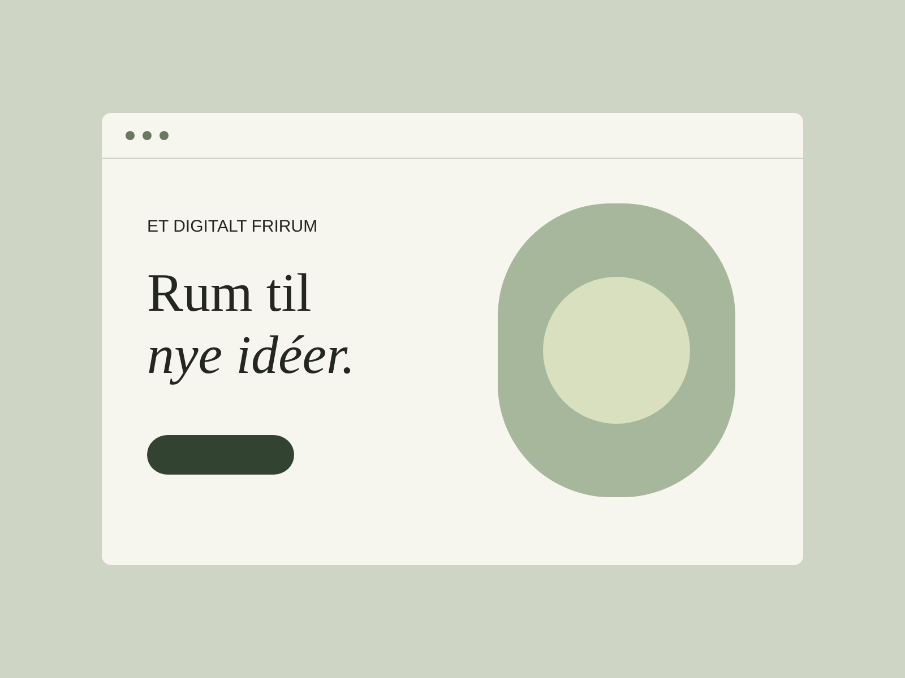
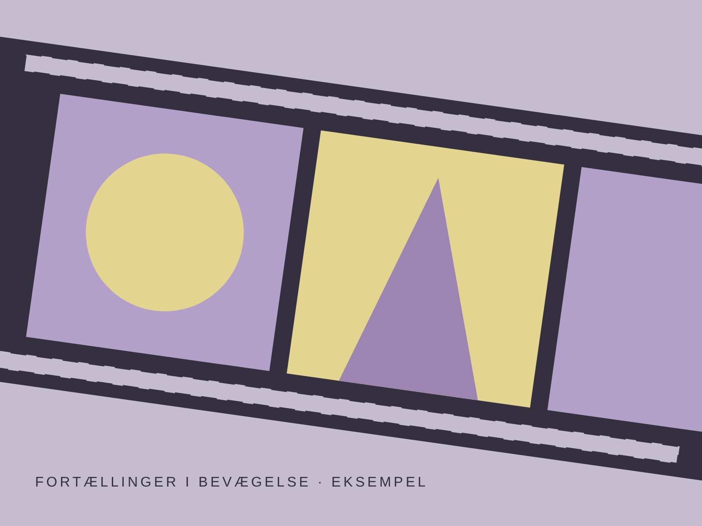

Plads til et visuelt projekt
Eksempelindhold · Erstat med dit eget billede, projektets idé og din rolle i arbejdet.
Mit kreative arbejde
Her samler jeg mine projekter inden for design, web og video. De første tre er foreløbig eksempelindhold.
Eksempelindhold · Erstat med dit eget billede, projektets idé og din rolle i arbejdet.

Eksempelindhold · Fortæl om løsningen, hvem den er til, og hvad du har lært.

Eksempelindhold · Udskift billedet med dit eget videoprojekt, når det er klar.